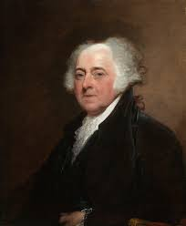

John Adams
October 30, 1735 • Braintree, MA
Date of Death: July 4, 1826 (90 years old), Quincy, MA Occupation: Second U.S. president of the U.S., lawyer, diplomat, farmer, and statesperson Relationships: Wife, Abigail Adams Important Events: Boston Massacre (1770): Adams defended the British soldiers in court, upholding the principle of "innocent until proven guilty" and ensuring a fair trial, Adams negotiated the treaty that ended the Revolutionary War, and he helped establish the role of the vice presidency. Fun Facts: Died on a historic day (Fourth of July), his son (John Quincy Adams became the sixth president of the United States, and He was the only non-Virginian of the first five presidents.